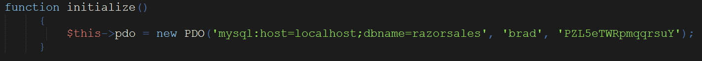

If you ask me, most of the value of a component comes with the interaction with a database.
Using these dashboards can give you the most up-to-date information in seconds. Let's look at this briefly. My code below is one example of how to make the initial connection to a MySQL database. These functions below will be part of a RazorFlow Dashboard constructor function that we will create instances for. I will describe in the next section where to place this statement in the context of the classes.
Notice how we'r using $this to assign the open connection to. We'll be passing a Dashboard object into an initializing function.
Yes, this isn't totally correct. I should check to see if a connection was made, not hardcode password and
usernames, but I'm keeping this example simple. The PHP PDO API is used here for the connection, but the older mySQLi
API can be used as well. The arguments in order are hostname, database name, username, password.
Next, we'll make our query to the database in an SQL statment.
We'll fetch our data and assign it to the variable $query.
Note that if you haven't populated your database with any values yet, you'll need to do that before we
move on to the next page. I just populated a single table to test the functionality. If there's a lot of data in your selection criteria
being sent with the request, you will want to limit your return records with a reasonable number to display such as SELECT * FROM customers LIMIT 7
where 7 is the number of records wanted in your component.
This could be one of many queries to the database. For example, after the getSales () function, we
might add in a getInventory() function and the a getWebsitehits() function. You'll need these
in the next section to put your data into your Dashboard Component. The returned results assigned to a variable, as shown in the next
page.